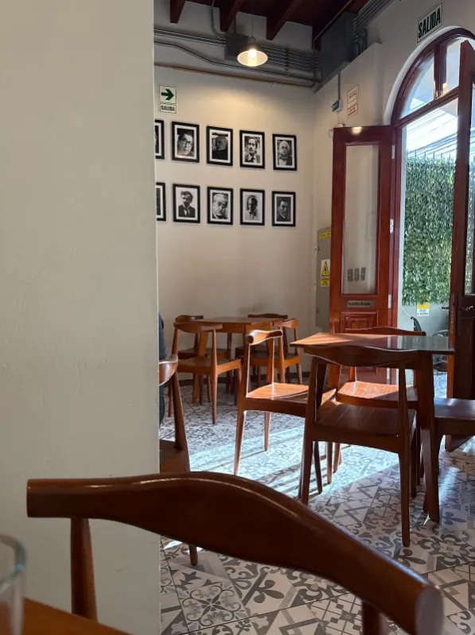
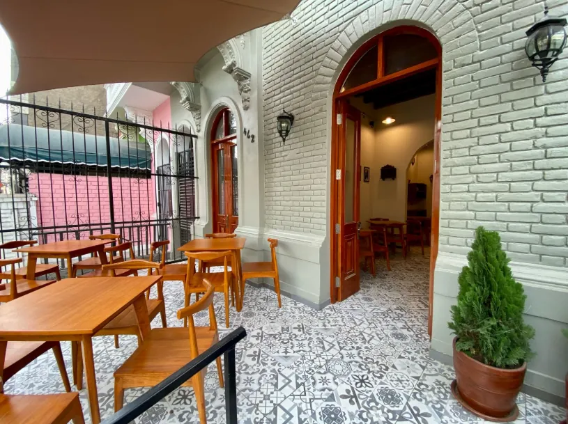
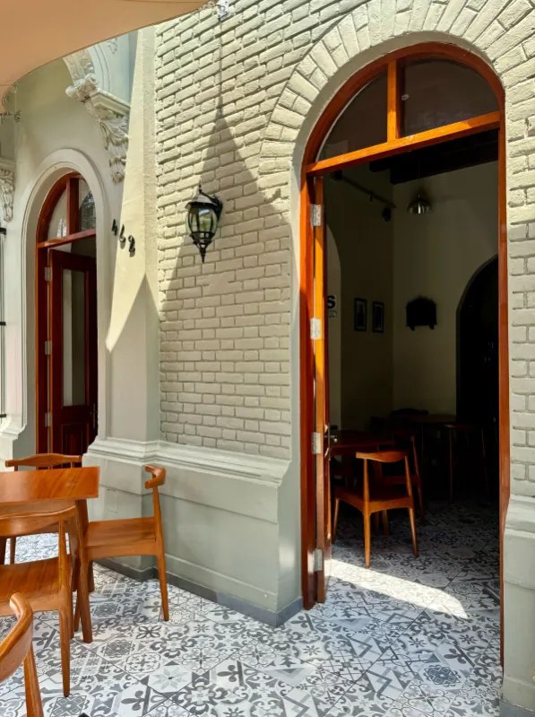
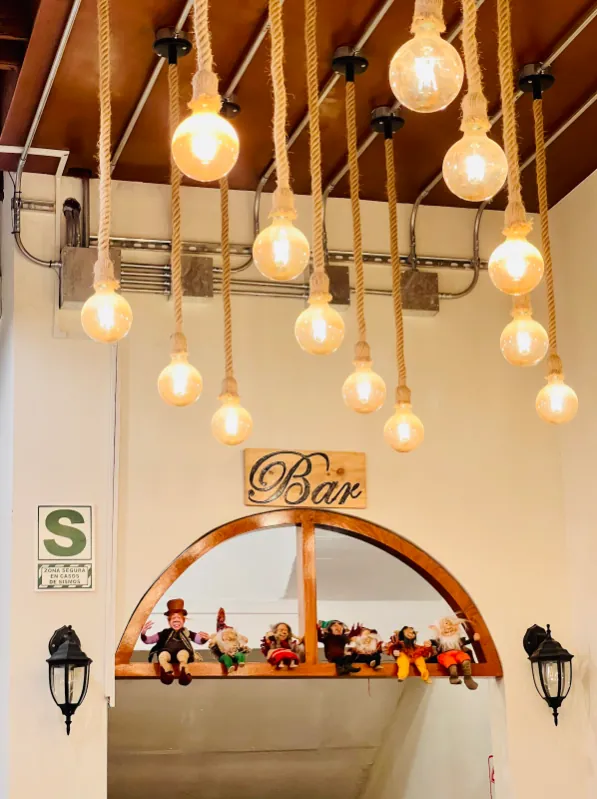
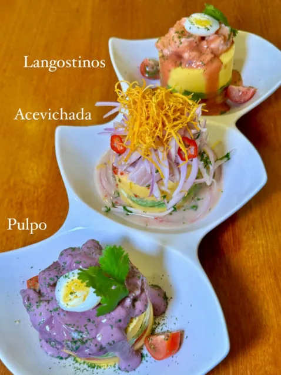
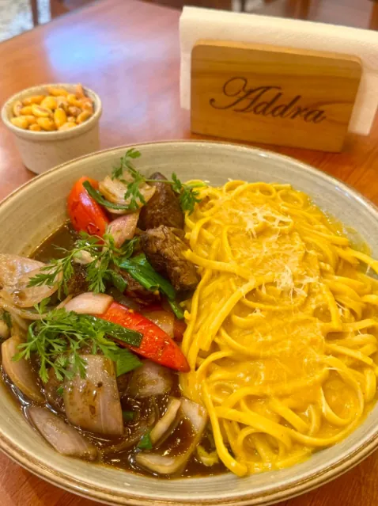
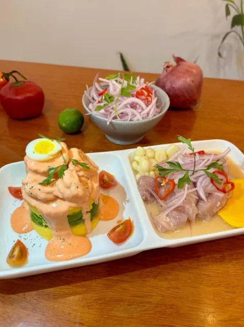

Taberna criolla en Jesús María
Cocina criolla de recetario, en una casona de 120 años
Ají de gallina, carapulcra con sopa seca, cau cau y causas, como en los huariques de antes. Separa tu mesa y la taberna te confirma por WhatsApp.
- Abrimos
- Martes a domingo, 12 m. a 5 p. m.
- Dónde
- Av. República de Chile 462

Un nombre que es un abuelo
- Alfonso
- Domingo
- del
- Río
- Arenas
Addra son las iniciales de Alfonso Domingo del Río Arenas, abuelo del chef Daniel del Río: él le enseñó la cocina y la música criolla, y con él recorrió los huariques de Lince.
La taberna abrió a fines de 2023 en una casona de unos 120 años en Jesús María.
La carta sale de recetarios antiguos, de la familia y de los huariques de siempre. Las paredes recuerdan a Lucha Reyes, Óscar Avilés y Mario Vargas Llosa.
La cocina y la música criolla se aprendieron en casa.

Una casona para quedarse
Terraza con losetas de colores, puertas de madera bajo arcos de ladrillo y un bar de focos colgantes. Tu perro también entra.



De la cocina de Daniel del Río
Los platos que más se fotografían en la casona. Pídelos para recoger o para delivery.





La carta
Precios en soles, como en la carta del local. Toca + para armar tu pedido; los marcados con sáb. y dom. salen solo el fin de semana.
Entradas criollas
- Papa a la huancaína24.00
- Sopa de frejoles32.00
- Sopa a la minuta32.00
Entradas marinas
- Ceviche de pescadosáb. y dom.42.00
- Ceviche mixtosáb. y dom.45.00
Causas
- Causa limeña26.00
- Causa de langostinos35.00
- Causa de pulpo39.00
- Causa acevichada40.00
- Festival de causas (langostinos, pulpo y acevichada)55.00
Fondos criollos
- Ají de gallina38.00
- Manchapecho (estilo limeño)40.00
- Seco de asado de tira con frejoles41.00
Saltados y tallarines
- Tacu tacu con seco de asado de tira45.00
- Tacu tacu con lomo saltado47.00
- Lomo fino saltado45.00
- Tallarín saltado de lomo fino42.00
- Tallarines en salsa de huancaína con lomo saltado47.00
- Tallarines verdes con sábana de bistec al panko y huancaína49.00
- Tallarines verdes con lomo fino saltado45.00
Fondos marinos
- Jalea de pescado45.00
- Jalea mixta48.00
- Arroz chaufa de pescado empanizado y mariscos al wok49.00
- Arroz chaufa de mariscos45.00
- Arroz chaufa de pescado42.00
- Arroz con mariscos46.00
Dúos marinos
- Ceviche de pescado y causa de langostinossáb. y dom.45.00
- Ceviche de pescado y chicharrón de pescadosáb. y dom.45.00
- Chicharrón de pescado y causa de langostinos45.00
Guarniciones
- Yuca sancochada o frita9.00
- Arroz blanco7.00
- Papas fritas8.00
- Camote sancochado6.00
- Tequeños de queso con huancaína (6)19.00
Bebidas frías
- Chicha morada (vaso)8.00
- Chicha morada (litro)20.00
- Maracuyá (vaso)7.00
- Maracuyá (litro)18.00
- Coca Cola o Inca Kola5.00
- Agua con o sin gas5.00
- Pilsen10.00
- Cusqueña Dorada, Trigo o Negra12.00
Bebidas calientes
- Café pasado6.00
- Infusiones5.00
Separa tu mesa
La casona se llena los fines de semana. Llenas esto, se abre WhatsApp con tu pedido de mesa y la taberna te confirma.
Atendemos de martes a domingo, de 12 m. a 5 p. m.
Av. República de Chile 462
Jesús María, Lima. Martes a domingo, de 12 m. a 5 p. m.